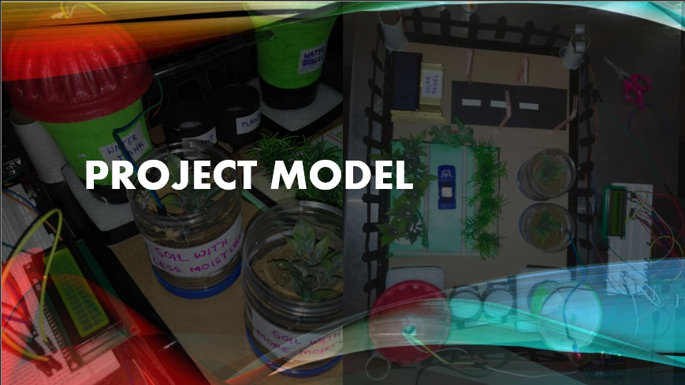

SMART CITY
An IoT Based Model



❮
❯
EARLY PREDICTION OF LIFESTYLE DISEASES
A machine learning model with the convolution of multiple datasets like position of individual, eating habits ,postures , body mass index etc., to predict potential health risks. Outcome of this model will be the prediction of potential diseases which will be contender of major risks in future.
PARALYTIC PATIENT CARE SYSTEM
An IoT enabled glove that can sense movements of non-paralyzed limbs of patients and convert them into meaningful messages. These messages will be transmitted to the care taker via a buzzer and a display screen showing the message at his place. If the receiver does not respond in the given period, an SMS will be sent to the list of contacts provided by the patient. Also, the activity of the patient and the care taker's responding time can be monitored online from anywhere along with the, Body temperature and heartbeat of the patient, Emergency cases can be dealt with special messages if any of them crosses a limit.
MEDICINE VENDING MACHINE
A Vending machine that would analyze the handwritten prescriptions (by Doctors) to analyze the keywords and text strings. This would include data like Hospital ID number, Patient’s Name ,Medicines and their Dosages . Based on the keywords provided by the user our software will extract the corresponding information from the records and Vending machine of medicine will give the medicine according to the number of dose then Patient will collect his medicine accordingly.